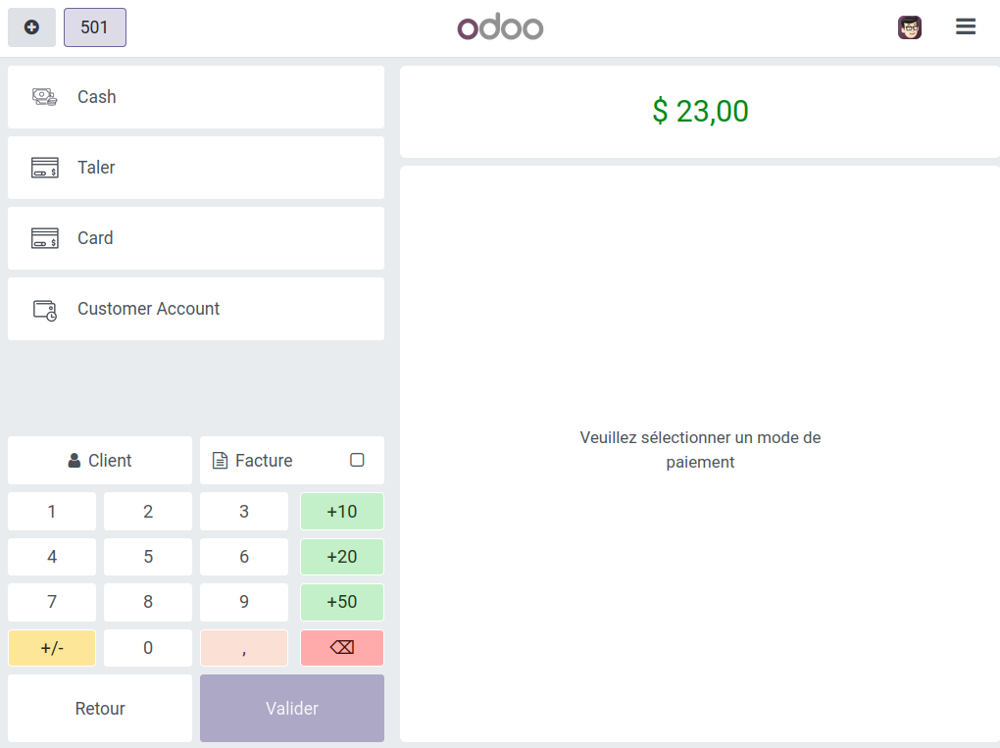
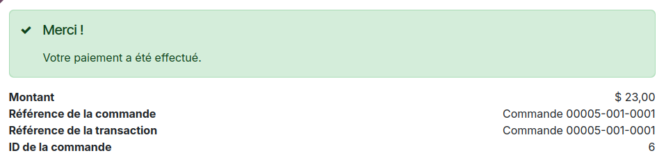
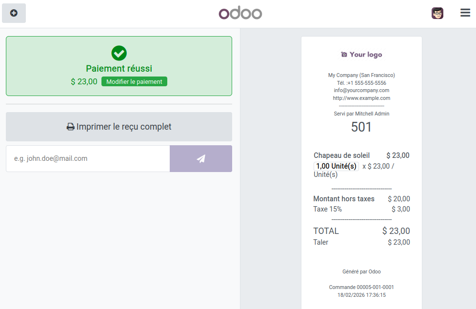

Point de Vente¶
Configurer Taler pour Point de Vente¶
La configuration des paiments Taler sur l’appli Point de Vente comprends quelques étapes de plus que les paiments en ligne classiques.
Étapes préiminaires :
Avoir installé l’appli Odoo
Point de Vente.
Créer le mode de paiement Point de Vente :
Dans la barre en haut de la page, rendez-vous dans
Configuration -> Modes de paiement.Créez un nouveau mode de paiement.
Nommez-le
Taler(ou autre, mais ce nom rendra le suivi plus intuitif).Cochez la case
Paiement en ligne.Séletionnez
Talerdans le champsFournisseurs autorisés.
Ajouter Taler au point de vente :
Pour cette étape, assurez-vous que le registre du point de vente soit fermé.
Dans la barre en haut de la page, rendez-vous dans
Configuration -> Point de Vente, pour accéder à la liste des points de vente.Sélectionnez celui pour lequel vous souhaitez ajouter le mode de paiement Taler.
Cliquez sur
Plus de paramètres : Configurations > Paramètres, pour atteindre les paramètres du point de vente.Vous pouvez également accéder à cette page en vous rendant dans Paramètres dans le menu de navigation de l’application (bouton en haut a gauche), puis dans la section
Point de Vente. Là, vous pouvez modifier le point de vente souhaité.
Dans
Paiement-> Modes de paiment, ajoutez le mode de paiement que vous venez de créer.
La mise en place est désormais terminée, et vous pourrez sélectionner le nouveau fournisseur de paiement lorsqu’une cliente ou un client effectuera un paiement.
Effectuer un paiement a l’aide de Taler à un point de vente¶
Ouvrez une caisse dans un point de vente.
Ajoutez un article dans le panier et cliquez sur
Paiementen bas de la page.Sélectionnez le mode de paiement
Taler.
{kind=link}

Cliquez sur
Valider, cela générera un code QR.Celui-ci redirigera vers une page Odoo reprenant les modes de paiements disponibles, dont Taler.
L’option Taler redirige vers une page de commande où payer à l’aide du porte-monnaie Taler.
Une fois le paiement effectué, la personne effectuant l’achat sera renvoyée vers une confirmation de paiment Odoo.
{kind=link}

Côté vendeur, le point de vente produira une notification de paiment et un reçu.
{kind=link}
